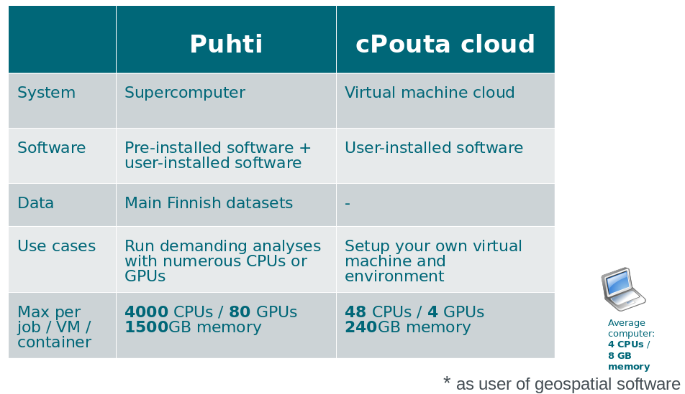

Point cloud workshop
online
Samantha Wittke and Kylli Ek, 08.02.22
Practicalities
- let's focus on discussions
- no recording
- shared notes and Q&A on HackMD
- breakoutrooms are available
HackMD
Today
- Short intro to CSC resources
- Use cases of point cloud research using CSC resources
- Discussion time
CSC
- non-profit state enterprise with special tasks
- owned by Finnish state (70%) and higher education institutions (30%)
- headquaters in Keilaniemi, Espoo
- side offices and supercomputers in Kajaani
CSC services
research.csc.fi/en/service-catalog
Compute & Analyze
- cPouta / ePouta
- Puhti / Mahti / LUMI
- Notebooks
Store, Share & Publish Data
- Allas
- EUDAT
- IDA
- Paituli
Why use CSC resources?
When own computer is not enough:
Resource needs (time (> 2 hours), memory (> 8 GB), storage (> 50GB)) -> Outsource computations, keep own computer free
- Server needs -> cPouta
- Course computers (same setup) -> Notebooks
It’s free! (for open science at Finnish university and state research institute users)
CSC expertise
+ servicedesk@csc.fi
- Geoinformatics team
- Storage team
- Supercomputer team
- Cloudcomputing team
- Accounts team
- ...
CSC projects
- necessary for doing anything
- needs 'PI'
- PI applies for CSC project with
- Billing units
- services
Project members share resources, storage and computing storage
Billing Units (BU)
- per project
- resources (CPU / GPU amount and time) on supercomputer
- Virtual Machine uptime
- Allas storage amount and time
my.csc.fi
Point clouds
set of data points in 3D space
Sources:
- spaceborne / airborne / terrestrial / mobile LiDAR
- photogrammetry (from images: structure from motion / multi view stereo ...)
File formats:
- ASCII: XYZ, ASC, PTX, ...
- binary: LAS/LAZ , FLS, PCD, ...
- other: PLY, FBX, E57 , OBJ, ...
Software and data
Storage and sharing solutions
Computing solutions - Puhti

Puhti webinterface demo
Example batch job script:
#!/bin/bash
#SBATCH --job-name=myTest
#SBATCH --account=<project>
#SBATCH --time=02:00:00
#SBATCH --cpus-per-task=4
#SBATCH --mem-per-cpu=2000
#SBATCH --partition=small
module load geoconda
srun python my_python_script.py input outputComputing resources for you*

Getting started
Training
- 'Using CSC environment efficiently' course
- -> also as interactive course 23.-25.3
- Python GIS course 7-10.3
-> follow our training calendar
How we can help
- 'Z is not working as expected'
- 'my code gives error Y '
- 'can A be installed to Puhti?'
- 'any advice how to do X?'
- training/example wishes
-> servicedesk@csc.fi
- Setting up pipelines, product provision, R&D, ...
-> CSC as project partner / subcontractor
Geoinformatics team
Kylli Ek
Samantha Wittke
CSC – IT Center for Science Ltd.
giscoord@csc.fi